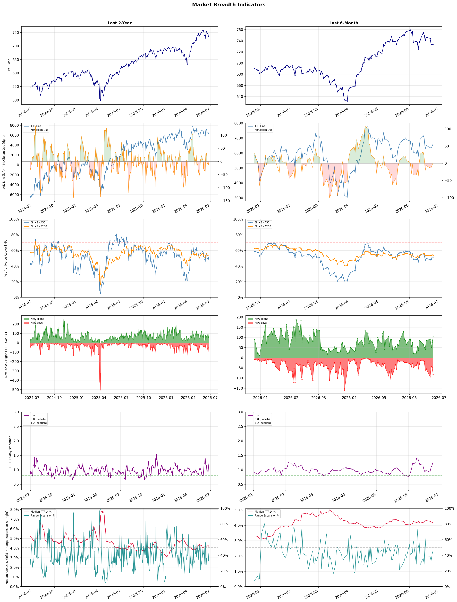

A daily market breadth and sector rotation report for active investors
| Item | Read |
|---|---|
| Regime | Selective Risk-On |
| Risk posture | Selective |
| Universe | 1,347 stocks tracked · 103 new 52-week highs · 30 active swing setups |
| Breadth | 51.7% of tracked stocks are above SMA50 — neutral range, new highs exceed new lows (103 vs 83) |
| Leadership | Airlines, Diagnostics & Research, and Healthcare Plans |
| Weakest groups | Financial Data & Stock Exchanges, Gold, and Uranium |
Use this report to prioritize research and chart review; validate entries, stops, liquidity, earnings, and risk before acting.
| Item | Read |
|---|---|
| Primary read | Selective Risk-On regime with Selective risk posture. |
| Research queue | ULCC, AAL, UAL, ALK, LUV |
| Leadership focus | Airlines, Diagnostics & Research, and Healthcare Plans |
| Caution list | Financial Data & Stock Exchanges, Gold, and Uranium |
| Review prompt | Check extension risk, chart location, fundamentals, valuation, and earnings before using any research row. |
| Item | Read |
|---|---|
| Primary read | 1 active risk warnings; use screen output as watchlist input only. |
| Bullish screens | AAL, DAL, UAL, GH, ILMN |
| Bearish screens | none |
| Alerts / levels | Automated trigger, stop, ATR, liquidity, reward/risk, and event-risk levels are pending future enrichment. |
| Review prompt | Open the linked chart, define trigger and invalidation, then check liquidity and event risk independently. |
Risk Posture: Selective — screen backdrop supports selective research in leading industries
Metric context: McClellan below -50 = elevated selling pressure; below -100 = washout territory. Range Expansion = share of stocks with daily range above their 20-day average. Signal Density = share of tracked names appearing in signal screens.
| Breadth Date | % > SMA50 | % > SMA200 | New Highs | New Lows | McClellan | Median Range | Avg Range | Median ATR14 | Range Expansion | Signal Density |
|---|---|---|---|---|---|---|---|---|---|---|
| 2026-06-25 | 51.7% | 53.8% | 103 | 83 | 2.4 | 3.8% | 4.5% | 4.2% | 46.2% | 5.1% |

Prior comparison date: June 24, 2026
| Metric | Prior | Current | Change |
|---|---|---|---|
| Regime | Selective Risk-On | Selective Risk-On | unchanged |
| Risk Posture | Selective | Selective | unchanged |
| % > SMA50 | 51.5% | 51.7% | +0.1 pts |
| % > SMA200 | 54.4% | 53.8% | -0.6 pts |
| New Highs | 74 | 103 | +29 |
| New Lows | 46 | 83 | -37 |
Top-10 industries entering: Medical Care Facilities. Top-10 industries leaving: Travel Services. New multi-signal long setups: AAL, ABSI, AEE, AMRX, BTSG, CADL, DFTX, DTE, EVC, EW. New multi-signal short setups: none.
| Status | Tickers | Read |
|---|---|---|
| Added | AAL, ABSI, AEE, AMRX, BTSG, CADL, DFTX, DTE | New technical screen matches vs prior report. |
| Removed | ALL, BCRX, CCEP, CRSR, DHC, DOC, EVRG, EWTX | No longer present in today's technical screen matches. |
| Still Active | ALKS, ASB, CFG, CVBF, DAL, GH, GNW, ILMN | Appeared in both current and prior reports. |
| Promoted | GNW | Model Screen Score improved by at least 15 points. |
| Downgraded | none | Model Screen Score declined by at least 15 points. |
| Direction | Industry | ETF | Prior Rank | Current Rank | Days | Rank Change |
|---|---|---|---|---|---|---|
| Rose | Building Products & Equipment | XHB | 94 | 8 | 35 | +86 |
| Rose | Packaging & Containers | N/A | 88 | 20 | 42 | +68 |
| Rose | Medical Devices | N/A | 90 | 22 | 42 | +68 |
| Rose | Diagnostics & Research | N/A | 70 | 2 | 42 | +68 |
| Rose | Furnishings, Fixtures & Appliances | N/A | 98 | 32 | 42 | +66 |
Bull: The Building Products & Equipment sector is likely experiencing rising relative strength due to a rebound in the housing market, as suggested by headlines like "Is Lennar Finally Turning the Corner After Its Housing Slump?" and "How Is PulteGroup’s Stock Performance Compared to Other Homebuilder Stocks?" This resurgence in homebuilder confidence, alongside the potential for increased construction activity, is further supported by the growing demand for building products in response to a recovering economy and favorable demographic trends, positioning the sector for growth. Additionally, the mention of mortgage rates in the context of investor concerns indicates that while rates may fluctuate, the underlying demand for housing remains strong, bolstering the outlook for companies within this industry.
Bear: While the recent headlines may suggest a rebound in the housing market, the underlying economic conditions present significant headwinds that could undermine this optimism. Rising mortgage rates, as highlighted in the concerns about potential spikes, could dampen homebuyer demand and affordability, leading to a slowdown in construction activity. Additionally, the broader economic uncertainty and potential recessionary pressures may limit consumer spending and investment in building products, challenging the sustainability of any perceived recovery in the sector.
Verdict: The Building Products & Equipment sector is likely experiencing rising relative strength due to a rebound in the housing market fueled by increased homebuilder confidence and demand for construction materials, supported by favorable demographic trends. However, the key risk lies in rising mortgage rates, which could dampen homebuyer demand and affordability, potentially stalling the sector's growth momentum. Investors should closely monitor mortgage rate fluctuations and broader economic indicators to assess the sustainability of this recovery.
Sources: Yahoo Finance, Google News
Bull: The Packaging & Containers industry is experiencing a rising relative strength trend despite recent challenges, primarily due to its resilience in the face of macroeconomic pressures such as rising energy costs driven by geopolitical tensions, as highlighted by multiple headlines. Additionally, the mention of promising stocks to watch in the sector suggests that investors are recognizing the long-term growth potential in packaging solutions, particularly as demand for sustainable and innovative packaging continues to grow. This optimism is likely bolstered by the industry's ability to adapt and innovate, positioning it favorably against other sectors amid current market volatility.
Bear: While the bull thesis highlights a rising relative strength trend and potential for long-term growth, it overlooks the immediate and significant headwinds facing the Packaging & Containers industry due to geopolitical tensions, particularly the Iran war, which has led to soaring energy costs and increased operational expenses. This volatility not only pressures profit margins but also raises concerns about demand stability, as consumers and businesses may cut back on spending amid economic uncertainty, potentially undermining the optimistic outlook for sustainable and innovative packaging solutions.
Verdict: The Packaging & Containers industry is likely experiencing a rising trend due to its adaptability and the increasing demand for sustainable solutions, which positions it favorably for long-term growth despite current macroeconomic challenges. However, the key risk lies in the significant headwinds from geopolitical tensions, particularly the Iran war, which could lead to soaring energy costs and operational expenses, ultimately pressuring profit margins and demand stability. Investors should closely monitor these geopolitical developments and their impact on operational costs and consumer spending to make informed decisions.
Sources: Google News
Bull: The Medical Devices sector is experiencing a rise in relative strength primarily due to its resilience and innovation in the face of broader market volatility, as highlighted by the AllianceBernstein report on enduring innovation amid valuation resets. Additionally, the healthcare sector's appeal as a defensive play, especially during downturns in tech stocks, underscores its stability and growth potential, as noted by Investopedia. This combination of consistent innovation and defensive characteristics positions medical device stocks favorably for future investment, as indicated by positive outlooks from sources like The Motley Fool and Barron's.
Bear: While the medical devices sector may currently exhibit relative strength and resilience, it is crucial to recognize that this could be a temporary phenomenon driven by market dynamics rather than sustainable growth. Valuations in the sector may be inflated due to investor sentiment seeking safety amidst broader market volatility, which could lead to significant corrections as fundamentals are reassessed. Additionally, ongoing regulatory challenges, supply chain disruptions, and potential pricing pressures from healthcare reforms could undermine the growth potential that analysts are touting, making this sector riskier than it appears.
Verdict: The medical devices sector is currently experiencing a rise due to its inherent resilience and ongoing innovation, which appeal to investors seeking stability amid broader market volatility. However, key risks include potential valuation corrections driven by inflated investor sentiment and external pressures such as regulatory challenges and supply chain disruptions, which could undermine long-term growth prospects. Investors should remain cautious and monitor these risks closely while considering positions in this sector.
Sources: Google News
Bull: The Diagnostics & Research sector is experiencing a bullish trend, driven by a combination of strong performance from key players like Charles River Laboratories and Revvity, which have recently seen significant stock price increases of 8.1% and 6.8%, respectively. Additionally, the positive outlook highlighted by analysts, such as the 43.86% potential upside for Agilent Technologies, suggests robust growth prospects in the sector, further fueled by the increasing integration of AI in healthcare, as noted in U.S. News. This confluence of strong individual stock performance and favorable macro trends positions the Diagnostics & Research sector favorably relative to other industries.
Bear: While the recent stock price increases for companies like Charles River Laboratories and Revvity may suggest a bullish trend, these gains could be driven more by market speculation and short-term sentiment rather than sustainable fundamentals. Additionally, the potential upside for Agilent Technologies, while enticing, may overlook the broader economic headwinds such as rising interest rates and potential regulatory changes in the healthcare sector that could hinder long-term growth. Furthermore, the integration of AI in healthcare, while promising, may not materialize as quickly or effectively as anticipated, leaving the sector vulnerable to volatility and investor disappointment.
Verdict: The Diagnostics & Research sector's bullish trend is primarily driven by strong performance from leading companies and a favorable outlook bolstered by the integration of AI in healthcare, which is expected to enhance efficiency and innovation. However, investors should remain cautious of the key risks posed by potential economic headwinds, such as rising interest rates and regulatory changes, which could undermine long-term growth prospects and lead to increased market volatility. It is advisable to closely monitor these macroeconomic factors and the pace of AI adoption in the sector to make informed investment decisions.
Sources: Google News
Bull: The Furnishings, Fixtures & Appliances sector is experiencing a relative strength rise primarily due to a robust rebound in consumer discretionary spending, as evidenced by strong earnings reports from companies like La-Z-Boy, which surged 20% following its results. Additionally, the sector-wide rally, highlighted by HNI's 7.8% jump, indicates increased investor confidence and momentum, likely driven by a broader economic recovery and growing consumer demand for home furnishings and appliances. This positive sentiment is further supported by Traeger, Inc.'s leadership in the consumer discretionary space, suggesting a favorable environment for companies within this sector.
Bear: While the recent uptick in the Furnishings, Fixtures & Appliances sector may appear promising, it is essential to consider the underlying economic pressures that could undermine this momentum. Rising interest rates and inflationary pressures are likely to dampen consumer spending in the long run, particularly in discretionary categories like home furnishings. Additionally, the sector's reliance on a few standout companies, such as La-Z-Boy and Traeger, may mask broader vulnerabilities, as these gains could be unsustainable in the face of potential economic headwinds.
Verdict: The Furnishings, Fixtures & Appliances sector is likely experiencing a rise due to a rebound in consumer discretionary spending, bolstered by strong earnings from key players like La-Z-Boy and HNI, reflecting increased investor confidence and demand for home products. However, the key risk lies in the potential impact of rising interest rates and inflation, which could constrain consumer spending and undermine the sector's growth trajectory in the long term. Investors should closely monitor economic indicators to assess the sustainability of this upward momentum.
Sources: Google News
| Direction | Industry | ETF | Prior Rank | Current Rank | Days | Rank Change |
|---|---|---|---|---|---|---|
| Fell | Aerospace & Defense | ITA | 10 | 80 | 28 | -70 |
| Fell | Other Industrial Metals & Mining | N/A | 15 | 77 | 42 | -62 |
| Fell | Chemicals | N/A | 23 | 84 | 42 | -61 |
| Fell | Oil & Gas Integrated | XLE | 22 | 82 | 35 | -60 |
| Fell | Copper | COPX | 17 | 76 | 7 | -59 |
Bear: While the bull analyst points to a cooling off in military spending as a primary driver of the sector's decline, this overlooks the potential for geopolitical tensions to reignite demand for defense capabilities, particularly in regions like Eastern Europe. Furthermore, the shift towards autonomous weapons may not translate into immediate revenue for traditional defense contractors, as the development and integration of these technologies can be capital-intensive and time-consuming, potentially leading to a lag in financial performance and investor sentiment in the near term.
Bull: The Aerospace & Defense sector is experiencing a decline in relative strength primarily due to a cooling off of military spending in Europe after an initial surge, as highlighted in the CNBC article. Additionally, the focus on emerging technologies like autonomous weapons, as noted in multiple headlines, suggests a shift in investment priorities that may temporarily divert capital away from traditional defense stocks, impacting their relative performance compared to other industries.
Verdict: The Aerospace & Defense sector is likely experiencing a decline due to a temporary reduction in military spending in Europe following an initial surge, coupled with a shift in investment focus towards emerging technologies like autonomous weapons. However, a key risk to this outlook is the potential for renewed geopolitical tensions, particularly in Eastern Europe, which could rapidly increase demand for defense capabilities and rejuvenate investor interest in traditional defense stocks. Investors should remain vigilant about geopolitical developments that could alter the current trajectory of the sector.
Sources: Yahoo Finance, Google News
Bear: While the bull analyst points to a shift towards innovative companies as a potential driver for growth, it overlooks the fundamental challenges facing the Other Industrial Metals & Mining sector, including declining demand from key industries and increasing regulatory pressures that could stifle production. Furthermore, the emphasis on AI and technology in mining may not translate into immediate financial benefits for the broader sector, as significant capital investment is required to implement these solutions, potentially straining the financials of companies already grappling with rising operational costs and market volatility.
Bull: The relative weakness in the Other Industrial Metals & Mining sector can largely be attributed to a shift in investor focus towards more innovative and technology-driven companies, as highlighted by the Boston Consulting Group's emphasis on AI-powered mining solutions. Additionally, the competitive landscape is intensifying, with major financial institutions like BofA identifying specific stock picks in a "red-hot" metals sector, suggesting that while the broader category may be underperforming, select players are gaining traction, potentially diverting attention and capital away from the Other Industrial Metals & Mining segment.
Verdict: The Other Industrial Metals & Mining sector is experiencing a decline primarily due to reduced demand from key industries and mounting regulatory pressures that hinder production capabilities. While the shift towards innovative, technology-driven solutions like AI in mining presents potential growth opportunities, the significant capital investment required poses a risk to companies already facing rising operational costs and market volatility. Investors should remain cautious and closely monitor these fundamental challenges before committing capital to this sector.
Sources: Google News
Bear: While the bull analyst highlights potential opportunities in the chemicals sector, the underlying macroeconomic pressures—such as rising energy costs, supply chain disruptions, and inflation—are likely to persist and weigh heavily on profitability. Furthermore, the geopolitical tensions, particularly the Iran war, may not only benefit certain players like China's coal chemicals but also exacerbate volatility and uncertainty in global markets, potentially leading to reduced demand and pricing power for Western chemical producers. This suggests that the sector's relative strength decline may be more indicative of fundamental weaknesses rather than a temporary market adjustment.
Bull: The Chemicals sector is experiencing a decline in relative strength primarily due to macroeconomic pressures and geopolitical tensions that are impacting demand and pricing dynamics. The headlines indicate that while the broader market is facing challenges, the basic materials sector, including chemicals, is seeing opportunities, particularly in light of the Iran war affecting petrochemical competitors, which could shift market dynamics favorably for companies like Air Products and Chemicals and Dow. Additionally, the mention of China's coal chemicals sector capitalizing on these geopolitical events suggests a competitive disadvantage for Western chemical producers, contributing to the sector's relative underperformance.
Verdict: The chemicals sector's decline in relative strength is primarily driven by persistent macroeconomic pressures, including rising energy costs and supply chain disruptions, which are undermining profitability across the industry. While geopolitical tensions may create short-term opportunities for certain players, the overall risk of reduced demand and pricing power for Western producers remains significant, suggesting that investors should approach the sector with caution and consider reallocating to more resilient industries.
Sources: Google News
Bear: While the bull analyst highlights potential recovery and underlying strength in the Oil & Gas Integrated sector, it's crucial to recognize that the recent headlines indicate significant volatility and uncertainty. The mixed performance of energy stocks and the comparison with alternative energy investments suggest a broader shift in investor sentiment away from traditional oil and gas, exacerbated by ongoing economic concerns and potential regulatory pressures aimed at reducing fossil fuel dependence. This environment raises doubts about the sustainability of any short-term gains and points to a more bearish outlook for the sector.
Bull: The Oil & Gas Integrated sector is likely experiencing a decline in relative strength due to mixed market sentiment and broader economic concerns, as indicated by headlines highlighting fluctuations in energy stock performance and the mixed results of U.S. equities. Additionally, the comparison between the State Street Energy ETF and the Alerian MLP ETF suggests investors are weighing the potential for better returns in alternative energy investments, contributing to the sector's relative weakness. However, the presence of articles discussing the best oil stocks to buy and resilient integrated energy stocks suggests underlying strength and potential for recovery in the long term.
Verdict: The Oil & Gas Integrated sector's decline is primarily driven by mixed market sentiment and a shift in investor focus towards alternative energy investments, reflecting broader economic concerns and potential regulatory pressures on fossil fuels. The key risk from the bear case is the uncertainty surrounding the sustainability of any short-term gains amid ongoing volatility and a possible long-term decline in demand for traditional oil and gas assets. Investors should closely monitor regulatory developments and market trends to make informed decisions about their exposure to this sector.
Sources: Yahoo Finance, Google News
Bear: While the bull analyst raises valid points regarding global manufacturing and interest rates, it's important to consider that the copper market is facing structural challenges beyond cyclical factors. The increasing competition from alternative materials in various applications, coupled with potential overproduction and supply chain disruptions, could lead to a significant supply-demand imbalance, undermining any bullish narrative. Furthermore, if the anticipated AI boom does not translate into immediate industrial demand for copper, investors may find themselves overexposed to an asset that lacks robust growth drivers in the near term.
Bull: Copper's relative strength is likely declining due to concerns over global manufacturing weakening, as highlighted in the headline "If Global Manufacturing Weakens, Here’s What Happens to This Copper ETF." This sentiment is compounded by the impact of Federal Reserve rate moves on copper stocks, as noted in the drop of Glencore's shares, which reflects broader market apprehensions about rising interest rates dampening economic growth and demand for industrial metals like copper. Additionally, the competitive landscape with other metals, particularly in the context of the AI boom, may also be influencing investor sentiment away from copper.
Verdict: The copper industry is experiencing a decline primarily due to weakening global manufacturing signals and rising interest rates, which are dampening demand for industrial metals. The key risk highlighted by the bear case is the potential for structural challenges, such as competition from alternative materials and overproduction, which could exacerbate supply-demand imbalances and hinder any recovery in copper prices. Investors should closely monitor manufacturing data and supply chain dynamics to gauge the sustainability of any bullish sentiment in the copper market.
Sources: Yahoo Finance, Google News
| Industry | Rank | ETF | 7d | 14d | 28d | 42d | Chg 42d | Size | 20D | 60D | Composite | Active Setups |
|---|---|---|---|---|---|---|---|---|---|---|---|---|
| Airlines | 1 | N/A | 5 | 14 | 15 | 63 | +62 | 8 | 17.3% | 58.8% | 0.954 | 0 |
| Diagnostics & Research | 2 | N/A | 12 | 13 | 18 | 70 | +68 | 16 | 23.6% | 42.7% | 0.934 | 1 |
| Healthcare Plans | 3 | IHF | 8 | 4 | 12 | 5 | +2 | 10 | 17.8% | 84.7% | 0.923 | 0 |
| Semiconductor Equipment & Materials | 4 | SOXX | 3 | 8 | 7 | 2 | -2 | 17 | 11.2% | 88.8% | 0.916 | 0 |
| REIT - Hotel & Motel | 5 | XLRE | 6 | 2 | 9 | 14 | +9 | 9 | 12.7% | 37.2% | 0.890 | 0 |
| REIT - Office | 6 | XLRE | 10 | 7 | 17 | 22 | +16 | 8 | 9.1% | 45.5% | 0.863 | 0 |
| Biotechnology | 7 | XBI | 22 | 57 | 23 | 31 | +24 | 93 | 12.8% | 33.5% | 0.861 | 2 |
| Building Products & Equipment | 8 | XHB | 18 | 44 | 76 | 57 | +49 | 8 | 13.0% | 25.7% | 0.850 | 0 |
| Banks - Diversified | 9 | N/A | 11 | 16 | 22 | 36 | +27 | 16 | 7.5% | 25.7% | 0.824 | 0 |
| Medical Care Facilities | 10 | IHF | 35 | 37 | 50 | 20 | +10 | 10 | 9.7% | 27.5% | 0.802 | 0 |
Rank columns (7d–42d) show the industry's rank that many trading days ago — lower is stronger. Chg 42d = rank change vs 42 trading days ago — positive means the industry moved up. 20D and 60D are the mean stock return within the industry over that period. Active Setups: count of today's swing-trade candidates from this industry appearing across all signal screens.
| Industry | Rank | ETF | 7d | 14d | 28d | 42d | Chg 42d | Size | 20D | 60D | Composite | Active Setups |
|---|---|---|---|---|---|---|---|---|---|---|---|---|
| Financial Data & Stock Exchanges | 88 | N/A | 88 | 94 | 91 | 69 | -19 | 7 | -15.5% | -11.6% | 0.049 | 0 |
| Gold | 87 | GDX | 83 | 97 | 74 | 58 | -29 | 27 | -14.3% | -12.8% | 0.080 | 0 |
| Uranium | 86 | URA | 71 | 96 | 89 | 81 | -5 | 6 | -14.9% | -8.5% | 0.120 | 0 |
| Auto Manufacturers | 85 | N/A | 81 | 91 | 40 | 65 | -20 | 10 | -15.1% | -8.0% | 0.132 | 1 |
| Chemicals | 84 | N/A | 82 | 90 | 55 | 23 | -61 | 8 | -15.8% | -12.2% | 0.140 | 0 |
| Agricultural Inputs | 83 | N/A | 86 | 95 | 63 | 62 | -21 | 5 | -8.6% | -18.2% | 0.148 | 0 |
| Oil & Gas Integrated | 82 | XLE | 79 | 54 | 61 | 25 | -57 | 10 | -9.8% | -15.0% | 0.171 | 0 |
| Oil & Gas E&P | 81 | XOP | 87 | 84 | 84 | 37 | -44 | 26 | -7.0% | -19.4% | 0.173 | 0 |
| Aerospace & Defense | 80 | ITA | 65 | 34 | 10 | 27 | -53 | 25 | -23.1% | 4.5% | 0.217 | 0 |
| Telecom Services | 79 | N/A | 80 | 79 | 52 | 64 | -15 | 20 | -7.9% | -2.9% | 0.250 | 0 |
Rank columns (7d–42d) show the industry's rank that many trading days ago — lower is stronger. Chg 42d = rank change vs 42 trading days ago — positive means the industry moved up. 20D and 60D are the mean stock return within the industry over that period. Active Setups: count of today's swing-trade candidates from this industry appearing across all signal screens.
These are research candidates from top-ranked stocks, capped at five names per industry to avoid over-concentration. Returns shown (60D, 120D, 250D) are historical — they reflect where prices have already moved, not forward expectations. Extension Risk flags names that may require extra patience or a better entry point. They are not buy signals.
Chart: TV = TradingView chart (opens in browser); PDF = local chart file (if downloaded).
| Ticker | Name | Industry | Industry Rank | Market Cap | 60D Hist | 120D Hist | 250D Hist | Extension Risk | Research Reason | Chart |
|---|---|---|---|---|---|---|---|---|---|---|
| ULCC | Frontier Group | Airlines | 1 | N/A | 136.4% | 71.1% | 123.3% | Very extended | Top-ranked in industry; very extended | TV |
| AAL | American Airlines | Airlines | 1 | N/A | 72.6% | 14.6% | 57.9% | Extended | Top-ranked in industry; extended | TV |
| UAL | United Airlines | Airlines | 1 | N/A | 58.0% | 20.4% | 73.6% | Extended | Top-ranked in industry; extended | TV |
| ALK | Alaska Air | Airlines | 1 | N/A | 55.9% | 5.9% | 8.7% | Extended | Top-ranked in industry; extended | TV |
| LUV | Southwest Airlines | Airlines | 1 | N/A | 43.5% | 26.0% | 65.3% | Constructive | Top-ranked in industry | TV |
| TWST | Twist Bioscience | Diagnostics & Research | 2 | N/A | 123.4% | 204.7% | 161.6% | Very extended | Top-ranked in industry; very extended | TV |
| PSNL | Personalis | Diagnostics & Research | 2 | N/A | 101.8% | 58.2% | 97.6% | Very extended | Top-ranked in industry; very extended | TV |
| NEO | NeoGenomics | Diagnostics & Research | 2 | N/A | 90.7% | 16.8% | 91.8% | Extended | Top-ranked in industry; extended | TV |
| ADPT | Adaptive Biotechnologies | Diagnostics & Research | 2 | N/A | 57.6% | 24.7% | 66.5% | Extended | Top-ranked in industry; extended | TV |
| WGS | GeneDx Holdings | Diagnostics & Research | 2 | N/A | 15.2% | -47.2% | -23.4% | Constructive | Top-ranked in industry | TV |
| CLOV | Clover Health | Healthcare Plans | 3 | N/A | 202.9% | 121.7% | 86.7% | Very extended | Top-ranked in industry; very extended | TV |
| OSCR | Oscar Health | Healthcare Plans | 3 | N/A | 164.2% | 99.5% | 40.0% | Very extended | Top-ranked in industry; very extended | TV |
| HUM | Humana | Healthcare Plans | 3 | N/A | 126.5% | 46.8% | 56.7% | Very extended | Top-ranked in industry; very extended | TV |
| CVS | CVS Health | Healthcare Plans | 3 | N/A | 49.2% | 31.9% | 53.6% | Constructive | Top-ranked in industry | TV |
| ALHC | Alignment Healthcare | Healthcare Plans | 3 | N/A | 34.8% | 15.0% | 65.0% | Constructive | Top-ranked in industry | TV |
| AMAT | Applied Materials | Semiconductor Equipment & Materials | 4 | N/A | 106.7% | 159.9% | 264.0% | Very extended | Top-ranked in industry; very extended | TV |
| LRCX | Lam Research | Semiconductor Equipment & Materials | 4 | N/A | 101.0% | 134.7% | 314.9% | Very extended | Top-ranked in industry; very extended | TV |
| KLAC | KLA Corp | Semiconductor Equipment & Materials | 4 | N/A | 87.2% | 113.0% | 186.6% | Extended | Top-ranked in industry; extended | TV |
| ONTO | Onto Innovation | Semiconductor Equipment & Materials | 4 | N/A | 81.9% | 118.1% | 243.4% | Extended | Top-ranked in industry; extended | TV |
| ENTG | Entegris | Semiconductor Equipment & Materials | 4 | N/A | 62.3% | 109.2% | 110.7% | Extended | Top-ranked in industry; extended | TV |
These are technical screen matches from existing signal files. They are not trade recommendations. Trigger, stop, ATR, liquidity, reward/risk, and event risk still require separate validation until those inputs are available.
Model Screen Score is weighted by signal count, industry rank, freshness, and setup type. It is not a probability of profit, expected return, or suitability rating. Industry cap: max 3 candidates per industry.
Signal glossary: Momentum Pullback = stock in an uptrend that has pulled back 10–30% and shows re-entry conditions. MA Compression = short- and long-term moving averages converging, often preceding a directional move. Three-Day Up/Down = three consecutive closes in the same direction. New 52Wk High/Low = price reached a new annual extreme.
Chart: TV = TradingView chart (opens in browser); PDF = local chart file (if downloaded).
| Ticker | Industry | Setups | Close | Industry Rank | Signal Count | Model Screen Score | Reason | Chart |
|---|---|---|---|---|---|---|---|---|
| GNW | Insurance - Life | MA Compression; New 52Wk High; Three-Day Up | 9.40 | 34 | 3 | 90 | Multi-signal; new-high strength | TV |
| AEE | Utilities - Regulated Electric | MA Compression; New 52Wk High; Three-Day Up | 114.53 | 46 | 3 | 85 | Multi-signal; new-high strength | TV |
| DTE | Utilities - Regulated Electric | MA Compression; New 52Wk High; Three-Day Up | 152.81 | 46 | 3 | 85 | Multi-signal; new-high strength | TV |
| AAL | Airlines | New 52Wk High; Three-Day Up | 17.57 | 1 | 2 | 100 | Multi-signal; top industry breakout | TV |
| DAL | Airlines | New 52Wk High; Three-Day Up | 92.11 | 1 | 2 | 100 | Multi-signal; top industry breakout | TV |
| UAL | Airlines | New 52Wk High; Three-Day Up | 134.60 | 1 | 2 | 100 | Multi-signal; top industry breakout | TV |
| GH | Diagnostics & Research | New 52Wk High; Three-Day Up | 142.94 | 2 | 2 | 100 | Multi-signal; top industry breakout | TV |
| ILMN | Diagnostics & Research | New 52Wk High; Three-Day Up | 177.65 | 2 | 2 | 100 | Multi-signal; top industry breakout | TV |
| NEO | Diagnostics & Research | New 52Wk High; Three-Day Up | 13.73 | 2 | 2 | 100 | Multi-signal; top industry breakout | TV |
| TER | Semiconductor Equipment & Materials | New 52Wk High; Three-Day Up | 471.96 | 4 | 2 | 93 | Multi-signal; top industry breakout | TV |
| INN | REIT - Hotel & Motel | New 52Wk High; Three-Day Up | 6.84 | 5 | 2 | 93 | Multi-signal; top industry breakout | TV |
| ABSI | Biotechnology | New 52Wk High; Three-Day Up | 10.21 | 7 | 2 | 93 | Multi-signal; top industry breakout | TV |
| CADL | Biotechnology | New 52Wk High; Three-Day Up | 9.47 | 7 | 2 | 93 | Multi-signal; top industry breakout | TV |
| DFTX | Biotechnology | New 52Wk High; Three-Day Up | 44.79 | 7 | 2 | 93 | Multi-signal; top industry breakout | TV |
| MAS | Building Products & Equipment | New 52Wk High; Three-Day Up | 79.72 | 8 | 2 | 85 | Multi-signal; top industry breakout | TV |
| TT | Building Products & Equipment | New 52Wk High; Three-Day Up | 503.46 | 8 | 2 | 85 | Multi-signal; top industry breakout | TV |
| LFST | Medical Care Facilities | New 52Wk High; Three-Day Up | 9.88 | 10 | 2 | 85 | Multi-signal; top industry breakout | TV |
| GLW | Electronic Components | New 52Wk High; Three-Day Up | 228.01 | 11 | 2 | 85 | Multi-signal; new-high strength | TV |
| RAL | Electronic Components | New 52Wk High; Three-Day Up | 73.54 | 11 | 2 | 85 | Multi-signal; new-high strength | TV |
| BTSG | Health Information Services | New 52Wk High; Three-Day Up | 69.70 | 12 | 2 | 85 | Multi-signal; new-high strength | TV |
| TXG | Health Information Services | New 52Wk High; Three-Day Up | 35.73 | 12 | 2 | 85 | Multi-signal; new-high strength | TV |
| ASB | Banks - Regional | New 52Wk High; Three-Day Up | 30.92 | 16 | 2 | 77 | Multi-signal; new-high strength | TV |
| CFG | Banks - Regional | New 52Wk High; Three-Day Up | 70.66 | 16 | 2 | 77 | Multi-signal; new-high strength | TV |
| CVBF | Banks - Regional | New 52Wk High; Three-Day Up | 22.46 | 16 | 2 | 77 | Multi-signal; new-high strength | TV |
| ALKS | Drug Manufacturers - Specialty & Generic | New 52Wk High; Three-Day Up | 52.83 | 19 | 2 | 77 | Multi-signal; new-high strength | TV |
| AMRX | Drug Manufacturers - Specialty & Generic | New 52Wk High; Three-Day Up | 17.32 | 19 | 2 | 77 | Multi-signal; new-high strength | TV |
| EW | Medical Devices | New 52Wk High; Three-Day Up | 89.72 | 22 | 2 | 77 | Multi-signal; new-high strength | TV |
| MAC | REIT - Retail | New 52Wk High; Three-Day Up | 25.48 | 23 | 2 | 77 | Multi-signal; new-high strength | TV |
| SPG | REIT - Retail | New 52Wk High; Three-Day Up | 225.49 | 23 | 2 | 77 | Multi-signal; new-high strength | TV |
| EVC | Advertising Agencies | New 52Wk High; Three-Day Up | 11.39 | 24 | 2 | 77 | Multi-signal; new-high strength | TV |
How To Use This Report
| Use | Purpose |
|---|---|
| Market map | Start with breadth, regime, risk warnings, and what changed since the prior report. |
| Industry scan | Use leading, deteriorating, rising, and declining industries to focus research. |
| Research queue | Treat long-term candidates as names for deeper fundamental, valuation, and chart review. |
| Technical review | Treat bullish and bearish screen matches as watchlist inputs that require independent trigger, stop, liquidity, and event-risk checks. |
| Source follow-up | Use chart links and source files to verify raw inputs before relying on any row. |
What This Report Is Not
| Not | Meaning |
|---|---|
| Investment advice | The report does not evaluate personal objectives, risk tolerance, tax situation, account type, or suitability. |
| Buy/sell recommendation | Named tickers are research candidates or screen matches, not recommendations to transact. |
| Price target | The report does not provide fair value estimates, targets, or expected returns. |
| Trade plan | Trigger, stop, sizing, reward/risk, liquidity, and event-risk review remain separate user work. |
| Performance claim | Model Screen Score is not validated historical performance or a forecast of future results. |
| Item | Note |
|---|---|
| Version | Daily Report Methodology v1 |
| Model Screen Score | Screen-fit rank based on signal count, industry rank, freshness, and setup type. |
| Not predictive proof | The score is not expected return, probability of profit, historical validation, or suitability analysis. |
| Industry ranks | Composite industry ranks use existing daily ranking outputs and historical rank columns when available. |
| Research candidates | Long-term rows are research candidates from ranked stocks and leading industries, with historical returns labeled as historical only. |
| Technical matches | Bullish and bearish rows are screen matches requiring independent chart, trigger, stop, liquidity, and event-risk review. |
| Source | Status | Rows | Path |
|---|---|---|---|
| Market breadth | present | 1254 | breadth_20260625.csv |
| Industry composite rankings | present | 88 | all_industry_composite_20260625.csv |
| Top ranked stocks | present | 195 | top_ranked_composite_20260625.csv |
| All ranked stocks | present | 1347 | all_stocks_composite_sorted_20260625.csv |
| Top momentum pullbacks | present | 1496 | top_momentum_pullbacks_20260625.csv |
| MA compression | present | 1496 | ma_compression_stocks_20260625.csv |
| Three-day up/down | present | 426 | three_day_up_down_stocks_20260625.csv |
| New 52-week members | present | 186 | breadth_new_52wk_members_20260625.csv |
This report is generated from automated technical screens and is for informational and research purposes only. It is not investment advice, a solicitation, or a recommendation to buy or sell any security. Past performance is not indicative of future results. You are solely responsible for your own investment decisions. Consult a licensed financial advisor before acting on any information herein.